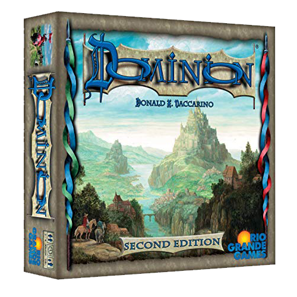
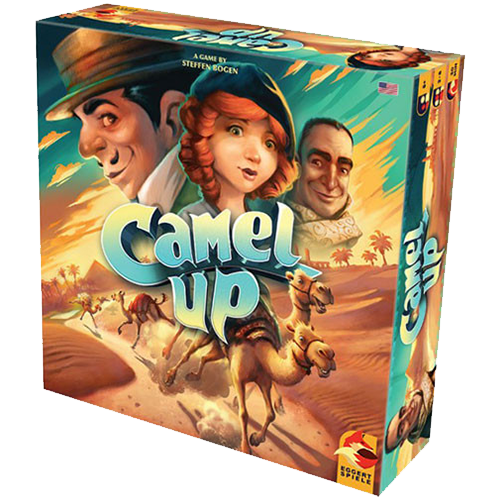
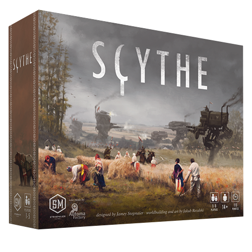
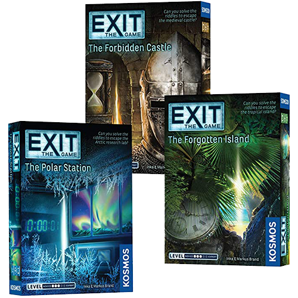

The below list is not listed in any ranking. I had a hard time trying to officially rank then but ultimately decided to list them in no particular order. If you are interested in learning more about the game or would like to purchase the game, I will include a link below each entry. However, its best to support your Friendly Local Game Store (FLGS), so find one in your area and support local business.
Dominion
I am a sucker for deck-building or engine card games, so it should come as no surprise that Dominion found its way on my top 5 list. Not only is it a basic deck-building game, it has a plethora of expansions making each game and strategy to win unique.
So what is a deck-building game? It's typcially a card game, though sometimes a game board is invovled, where the main focus of the game is to build your deck of cards using game resources to acquire enough victory points to win the game.
Star Wars: X-Wing

Star Wars: X-Wing is my most favorite table top tactics game. It might help that I am a HUGE Star Wars junky, but aside from that I really enjoy how the game is played. It's a little bit like 5D Chess.
A table top tactics game is similiar to a board game but typically has all its pieces purchasable individually and the strategy of the game is similiar to commanding an army and you're the general.
Camel Up
If you are looking for a game to convince you to never gamble again or to see who's buying dinner next, I can't suggest Camel Up enough. Think of a day at the horse races, but the speed of the horse are determined by the fall of the dice.
Camel up is a pretty standard board game. All game pieces and boards are included in the box. Due to the nature of this game, even if you think you know who's going to win....you better think again.
Scythe
Scythe was one of the most anticipated games of 2016 and has a trophy case to boot. Scythe is also an engine-building game, but its also a hybrid in my mind, of some other great board games including Catan, 7 Wonders, Risk and Century.
Scythe was a kick starter and is one of the most funded games on the platform. I think my most favorite part about Scythe and their publisher Stone Maier Games, is even though this is a multiple game, they have built in a single player version where you compete against the A.I.
Exit: The Game
My wife and I are big puzzle and escape room junkies, and once we found out that we could have that same escape room experience without selling a kidney on the black market we were instantly hooked.
The Exit: The Game series had a plethora of difficulty levels, scenarios and is playble for groups of 1-6 people. I think at this point we've played through almost all of them. You'd think that after doing enough the game publishers resuse game mechanics or gimmicks, but we've yet to find that in all the versions we've played.